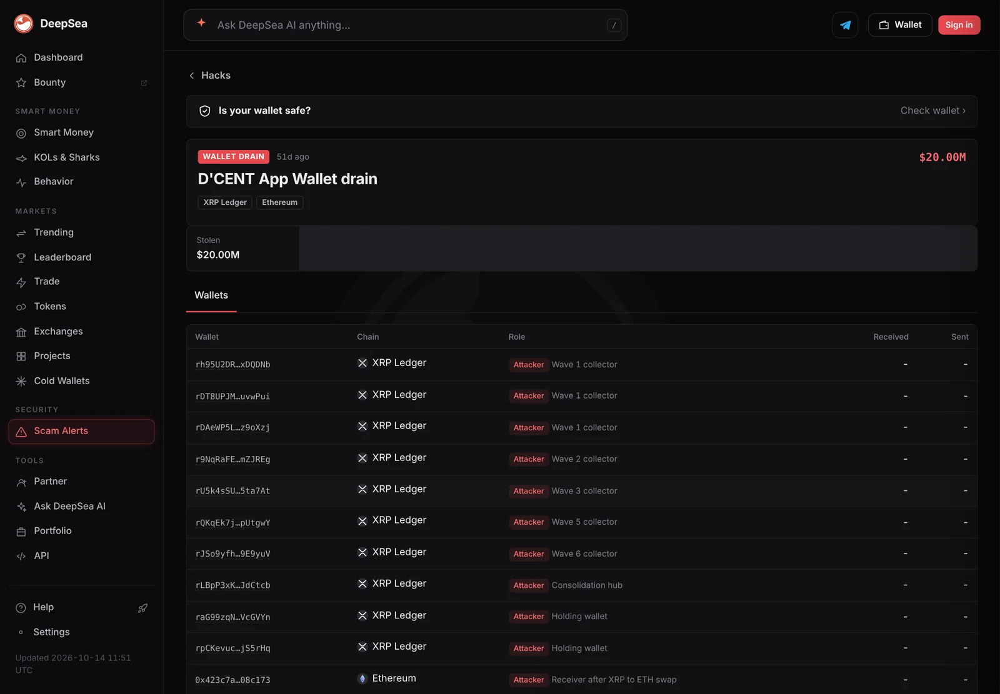

12.7 million XRP drained from D'CENT app wallets. Why updating the app will not save you
Since mid-September, thousands of software wallets made with D'CENT's mobile app have been emptied in waves. The Korean wallet maker says users must move everything to a brand-new recovery phrase, and it is keeping the cause private.
Key points
- About 12.7 million XRP has been taken from 12,516 D'CENT App Wallets since September 15, 2026, per XRPL.to. D'CENT has given no loss figure; DeepSea's hack tracker values it at about $20 million and counts about 6,700 drained wallets, fewer than XRPL.to.
- Most at risk: anyone who entered a recovery phrase into the app and signed transactions with a version older than 8.1.0. Updating is not enough; you need a new phrase.
- D'CENT keeps the root cause private, says hardware wallets look safe unless their phrase was used in the app, and has no compensation plan.
 What DeepSea's data shows
What DeepSea's data shows
DeepSea's hack tracker values the D'CENT App Wallet drain at about $20 million, a dollar figure D'CENT itself has not given. DeepSea says about 11.7 million XRP was taken in six waves between September 15 and 20.
DeepSea's counts differ from the on-chain totals cited in this article. DeepSea's hacks list counts about 6,700 drained app wallets; XRPL.to counts 12,516 by October 8. For the same six waves, XRPL.to's figures add up to 11,215,317 XRP, against DeepSea's 11.7 million. DeepSea's window ends on September 20, so it leaves out the later collector addresses, which took about 0.95 million XRP.
DeepSea's reading supports D'CENT's account of the cause. The transfers were signed with the victims' own keys, DeepSea says, so this is a key compromise on the wallet side, not a flaw in the XRP Ledger. A large share was swapped from XRP to ETH and moved to Ethereum; the rest went to exchanges and instant-swap services. DeepSea flags 15 receiving wallets, 10 on the XRP Ledger and 5 on Ethereum, as theft-linked with a risk score of 90.
DeepSea tracks only the XRP Ledger and Ethereum, while D'CENT lists Bitcoin, Ethereum, the XRP Ledger, TRON and EVM networks as affected. DeepSea notes that D'CENT hardware wallets are not affected unless their recovery phrase was also entered in the app, and that the root cause has not been fully confirmed.

Data: DeepSea (desea.io), checked November 1, 2026, 11:07 p.m. ET.
How the drain started
Thieves have drained 12,727,699 XRP from 12,516 wallets created with D'CENT's mobile app, according to on-chain tracker XRPL.to, with the first wave on September 15, 2026. D'CENT is a wallet brand from IoTrust, a South Korean security company. Besides hardware wallets, it offers a free App Wallet, a software wallet whose keys live on the phone.
At 12:19 a.m. ET on September 16, 2026, D'CENT posted an important notice on X. It said it had detected abnormal asset transfers involving the App Wallet and that the issue appeared limited to that app. It urged anyone holding assets in the app, or using the same recovery phrase for the app and a hardware device, to move funds to a secure wallet as soon as possible.
By then the drain had already started. According to the on-chain timeline from XRPL.to, an XRP Ledger explorer, the first wave ran on September 15 from 11:35 a.m. to 2:55 p.m. ET. It took 3,618,110 XRP from 1,682 wallets. A handful of large wallets were emptied by hand first.
Who is at risk
D'CENT's status report, based on facts confirmed by September 17, sets out three tests:
- a recovery phrase was at some point entered into the App Wallet, including hardware phrases restored into the app;
- the address has a signing history, such as transfers, token approvals or app transactions (receive-only addresses face lower, but not zero, risk);
- that signing happened in an app version older than 8.1.0, released on November 5, 2025. The version at the time of signing matters, not the one installed today.
The affected chains include Bitcoin, Ethereum, the XRP Ledger, TRON and EVM networks. If one EVM address is affected, D'CENT says users should also check the same address on BNB Chain, Polygon, Base and Arbitrum. The activity was first seen on Android, but D'CENT says iOS faces the same potential impact.
The key instruction is that updating is not enough. Users should create a brand-new recovery phrase and move everything there. Restoring the old phrase in a new app does not help: D'CENT says reusing a phrase may regenerate the same or a related key. Its FAQ also asks users to update to version 10.0.0 or later. An in-app check feature went live on September 17.

How much was taken
D'CENT has not given its own loss figure, so totals come from the XRP Ledger itself. XRPL.to lists five more waves between September 17 and 20 that took 7,597,207 XRP from about 2,530 wallets. New collector addresses took a further 681,765 XRP between September 21 and October 1, and another 266,916 XRP between September 27 and October 7.
As of October 8, XRPL.to counted 12,727,699 XRP taken from 12,516 wallets. Many of those accounts were deleted outright, for a reason. On the XRP Ledger, every account must lock a small reserve of XRP, and deleting an account releases it, so the thief collected those reserves too. About 6.96 million XRP was swapped to Ethereum through THORChain, a cross-chain swap service. Some 772,560 XRP still sat in the receiving wallets.
D'CENT App Wallet drain on the XRP Ledger
million XRP
Source: XRPL.to on-chain timeline, data as of October 8, 2026. D'CENT has not confirmed these figures.
What D'CENT is not saying
D'CENT has kept the technical details private. Its status report says that publishing specific information could be used in identical or similar attacks, and that it also wants to protect the investigation. The FAQ says the cause will be announced once confirmed.
The on-chain data does show a pattern. XRPL.to found that day-one victims were mostly wallets created in 2022 and 2023, which made up about 78% of that group. Later waves reached younger wallets, including 603 created in 2025. Transaction data alone cannot show how the keys were obtained.
The company has drawn a line around its hardware. Its FAQ says it has not confirmed any impact on hardware wallets, unless the same recovery phrase was used in the App Wallet.

Police, freezes and no compensation plan
D'CENT says it reported the case to Korean law enforcement, which accepted it, and set up a hotline with police on September 17. It asked exchanges to freeze suspected assets and is tracing funds with an outside security team. It warns that freezing depends on third parties and may not succeed.
Neither the status report nor the FAQ describes a compensation plan. The FAQ warns that D'CENT will never ask users to send assets anywhere for recovery or compensation, and treats such offers as scams. The company says it runs no official Telegram or Discord channels and that no one should ever enter a recovery phrase, key or PIN for someone offering help.
Timeline
App version 8.1.0 released; signing in older versions is the key risk factor
First wave takes 3.62 million XRP from 1,682 wallets
D'CENT warns of abnormal App Wallet transfers on X
Status report published; in-app check feature released; police hotline set up
Five further waves take about 7.6 million XRP
New collectors take about 0.95 million XRP more
XRPL.to total reaches 12.73 million XRP
LC Insight analysis
This section is our reading of the facts above, not a statement of fact.
- We think the pattern is the story. Older wallets went first, and D'CENT says reusing a phrase can recreate a vulnerable key. If that holds, the weakness is in how keys were made, not in users being phished one by one.
- Expect pressure on every wallet maker to publish audits of how they generate keys. Users will start asking how their seed phrase was created, not only where it is stored.
- For now, victims carry the loss alone. Keeping the cause secret may protect other wallets, but it also leaves users unable to judge their own risk, and that trade-off cannot last forever.
What's next
- A full root-cause report from D'CENT
- Any compensation or recovery plan from IoTrust
- Korean police updates on frozen funds
- Further drains from wallets that have not migrated
Disclaimer. This article is based on public information and the sources listed below as of the update time shown. It is for information only and is not investment, legal or tax advice. Figures may change as companies and authorities publish new data.